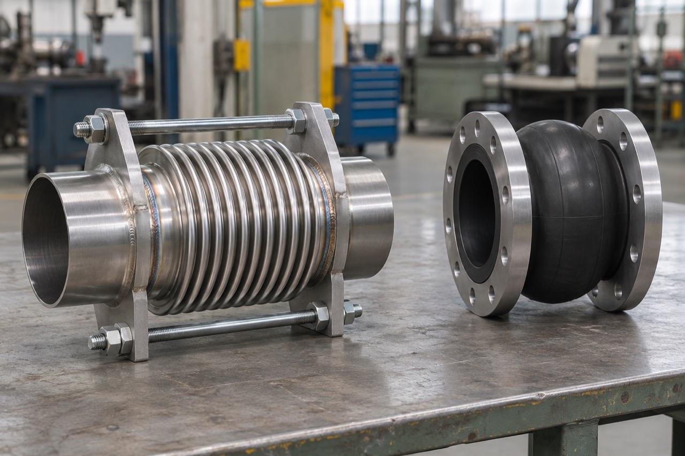

Внутреннее обучение Завода ТИК
От изделия до запроса инженеру
Узнайте товарную группу, найдите организацию с подходящей задачей, задайте безопасные вопросы и передайте запрос без технических догадок.
- Опознать изделиеЧто перед вами и чем оно отличается от соседней категории.
- Найти объект и рольКакие компании искать и кому звонить внутри.
- Провести первый разговорВыяснить задачу и собрать исходные документы.
- Передать инженеруНе обещать подбор, пока параметры не проверены.

Исправленный учебный ролик
Заливка стыка в ППУ-изоляции
Двенадцать этапов в правильном порядке: гладкую муфту заранее надевают на одну трубу и отводят; сваривают стальную несущую трубу; после сварки соединяют СОДК, устанавливают термоклей, сдвигают муфту на стык и усаживают её открытым пламенем горелки. Только после усадки сверлят два отверстия, смешивают А + Б, заливают смесь и последовательно устанавливают оба типа пробок.
Важно. В ролике намеренно нет температур, времени прогрева, пропорций компонентов и режимов работ. Их берут только из проекта, технологической карты и инструкции изготовителя конкретного КЗС.
Полный каталог без дублей
12 категорий продукции
ППУ-трубы и все фасонные изделия объединены. Общий раздел компенсаторов уточнён как неизолированные сильфонные и резиновые изделия, чтобы не дублировать СКУ в изоляции и сальниковые модели.
категорий показано
Слова, которые встретятся в заявке
Общий словарь менеджера
- ППУ
- Пенополиуретановая теплоизоляция между стальной трубой и наружной оболочкой.
- ППМ
- Пенополимерминеральная изоляция; жёсткий слой без отдельной наружной оболочки.
- ПЭ / ОЦ
- Полиэтиленовая или оцинкованная наружная оболочка ППУ-изделия.
- КЗС
- Комплект заделки стыка предизолированных труб после сварки.
- СОДК
- Система оперативного дистанционного контроля состояния ППУ-изоляции.
- СКУ
- Сильфонное компенсирующее устройство — готовый узел с сильфоном и защитными элементами.
- ВУС / УС
- Весьма усиленное / усиленное антикоррозионное покрытие стальной трубы.
- DN / Ду
- Условный (номинальный) диаметр. Не заменяет наружный диаметр без нормативного соответствия.
- ОД
- Наружный диаметр стальной трубы или оболочки — всегда уточняйте, о каком слое речь.
- Компенсация
- Допустимое перемещение узла. Значение и направление подтверждает инженер.
- Адгезив
- Клеевой слой ленты или манжеты, который соединяет материал с подготовленной поверхностью.
- Футляр
- Защитная труба большего диаметра при проходе под дорогой, через стену или другое препятствие.
Передача без потери смысла
Карточка инженеру
Менеджер фиксирует факты клиента и прикладывает исходные документы. Технический выбор остаётся за инженером.
- Назовите объект и стадию.
Новое строительство, ремонт, замена, аварийная потребность или запас. - Сохраните исходную формулировку.
Не заменяйте DN наружным диаметром и не «улучшайте» обозначение. - Приложите доказательства.
Спецификацию, опросный лист, чертёж, фото шильдика и узла. - Отделите срок клиента от обещания.
Требуемая дата — входные данные, а не подтверждённый срок изготовления.
Проверяемость
Как читать источники
В каждой категории раскрывается список ссылок, на которых основаны технические формулировки. Структура ассортимента сверена с каталогом и картой сайта 10 ноября 2026 года. Цены и характеристики карточек сайта не переносятся как обещание клиенту.
- Каталог Завода ТИК — действующие верхнеуровневые разделы.
- Карта сайта — подразделы и товарная структура.
- Полный реестр источников и локальных материалов.